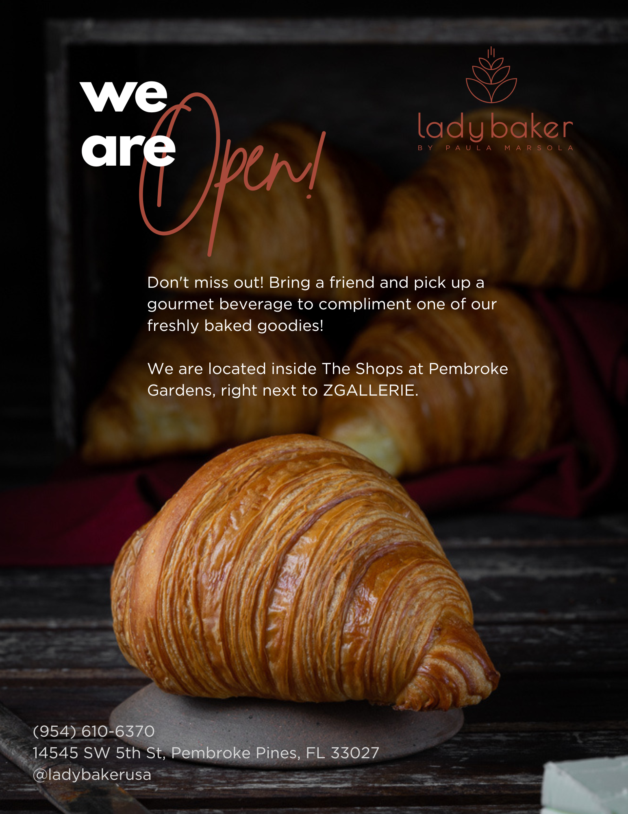
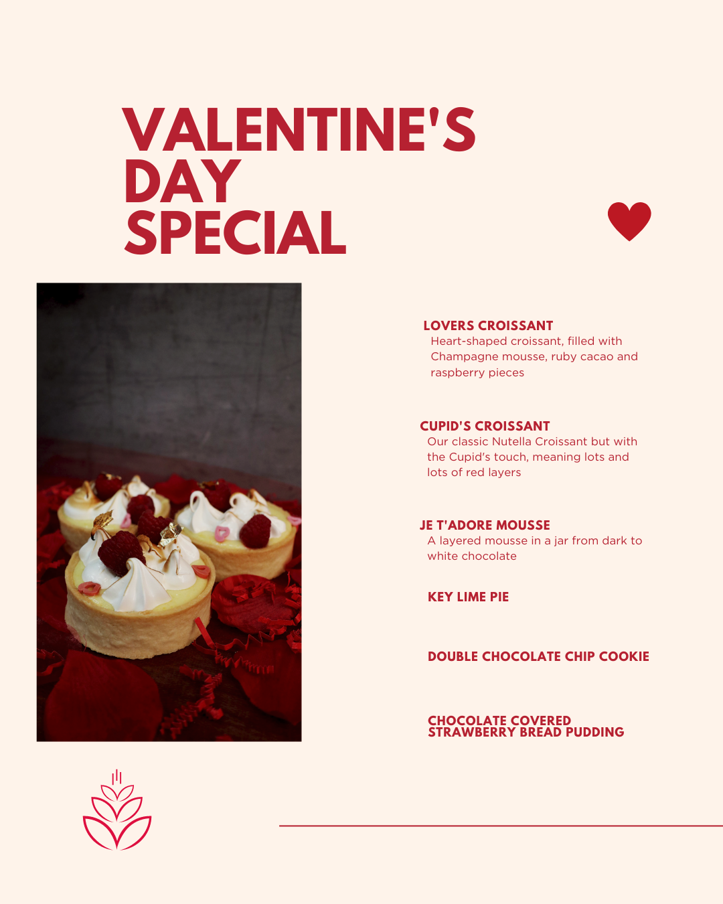
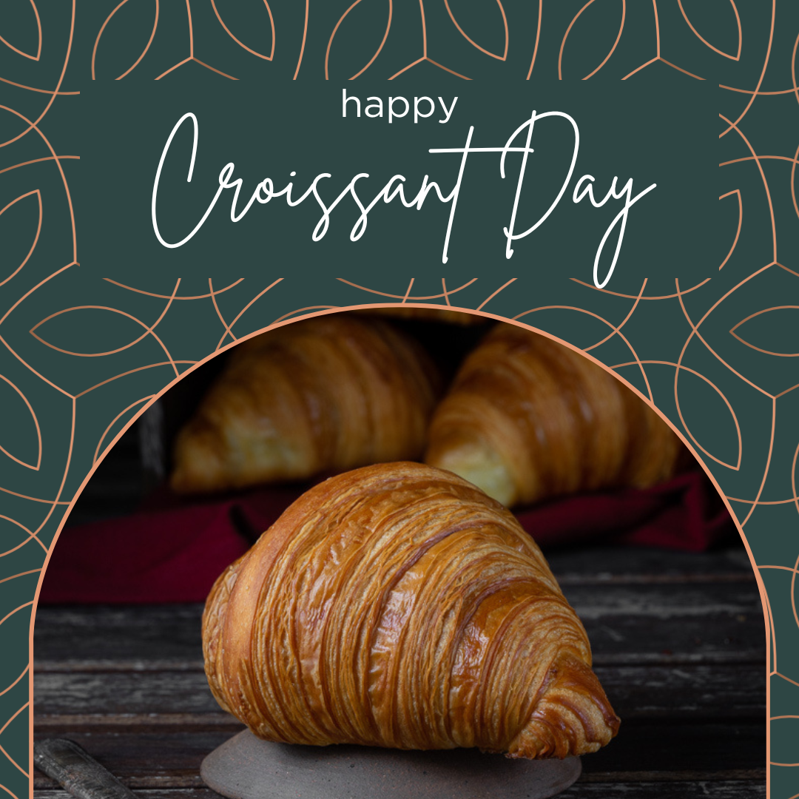
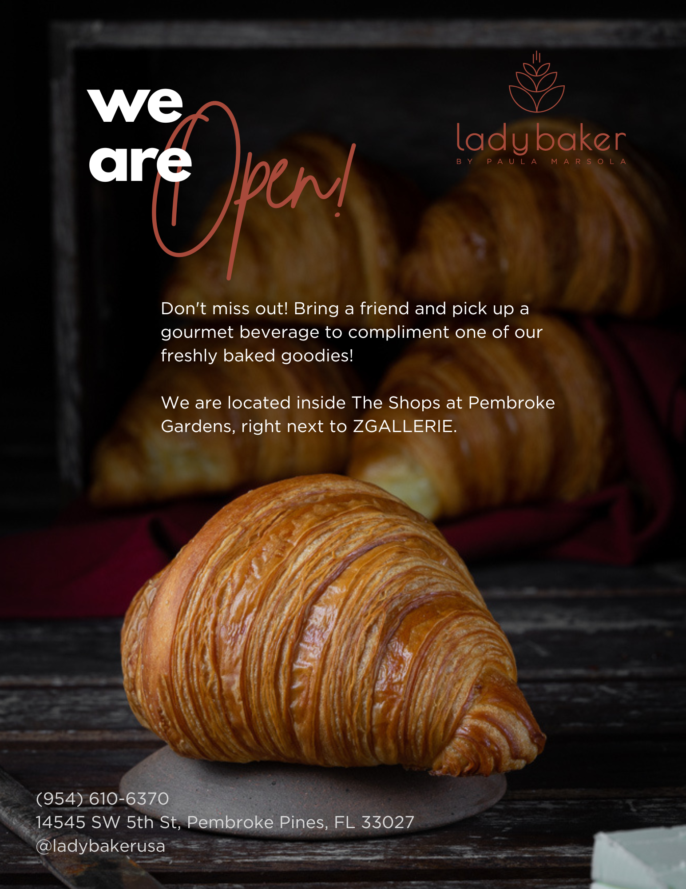
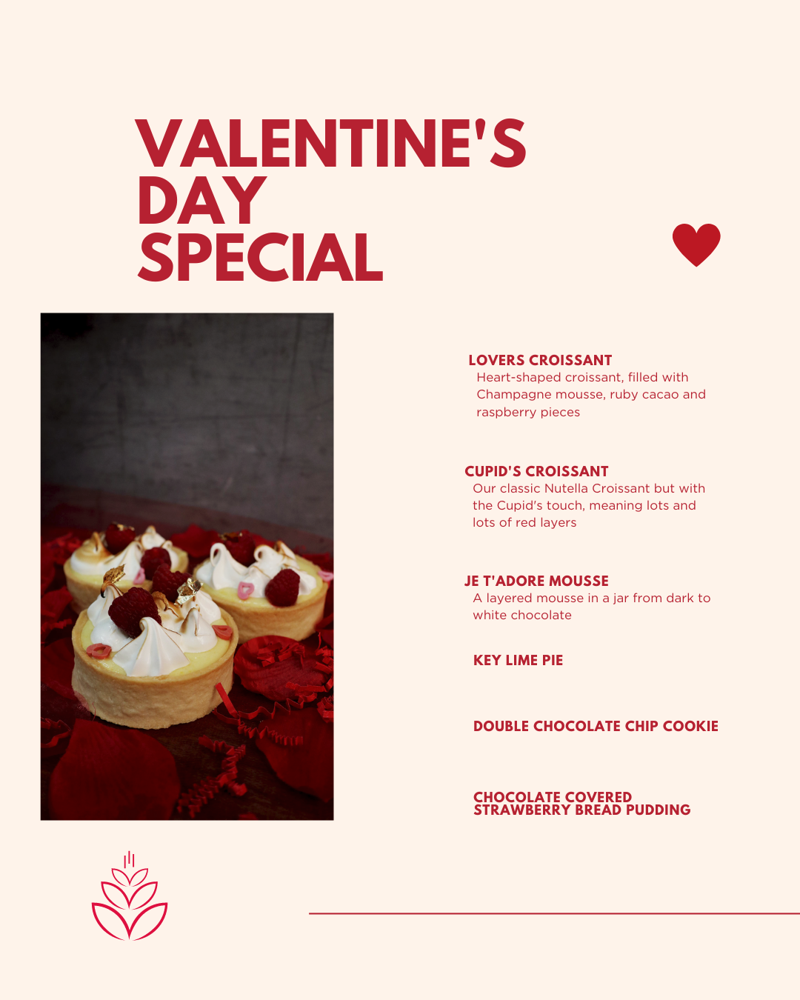
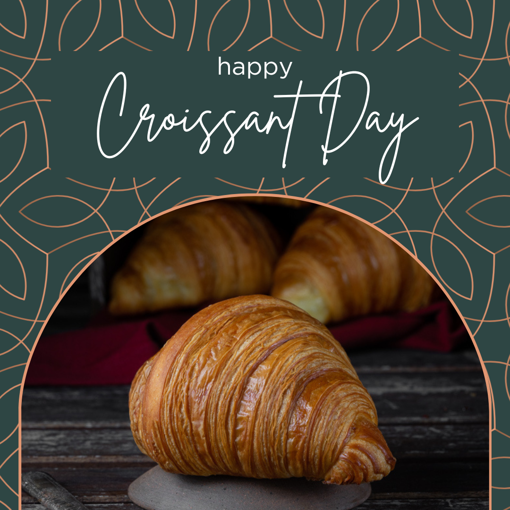

As the Social Media Manager at Lady Baker, I play a role in elevating the bakery's digital presence. Leading and supervising a social media team, I oversaw photographers and videographers to ensure captivating visual content. Beyond content creation, I took charge of designing menus and graphics, as well as conceptualizing uniforms and store merchandise. Here are some of the designs I have worked on at my time at Lady Baker, this includes: menu, seasonal menus, store merchandise, uniforms, flyers, poster, cards, stickers and social media posts design.
 




